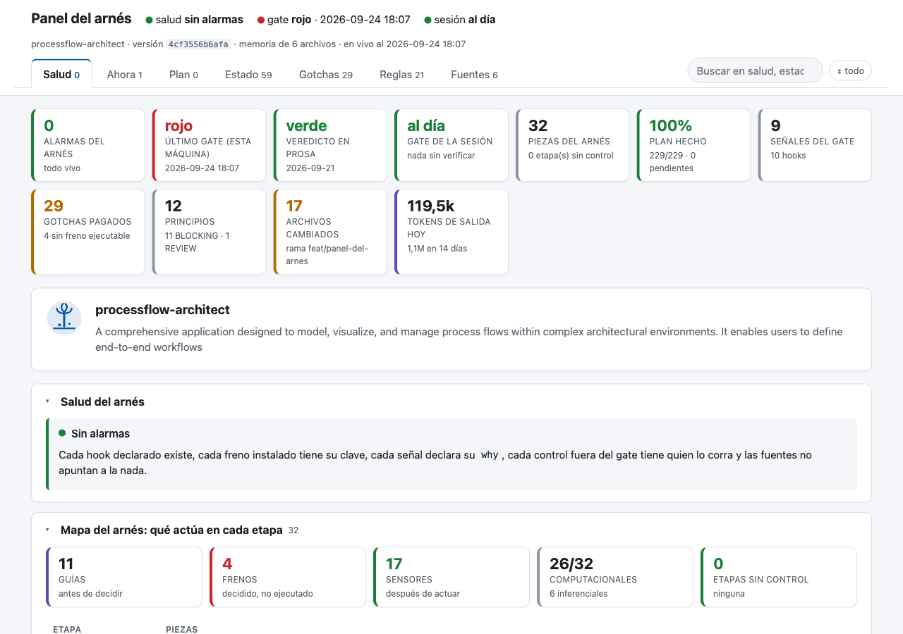
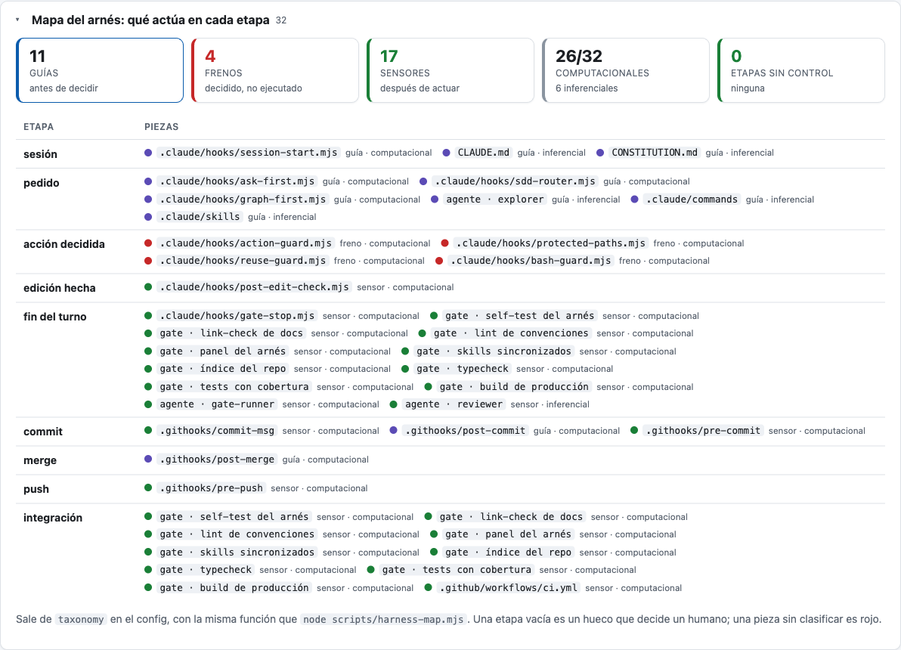
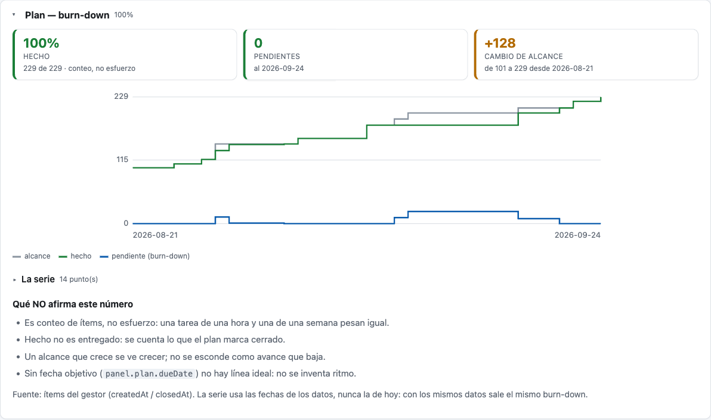
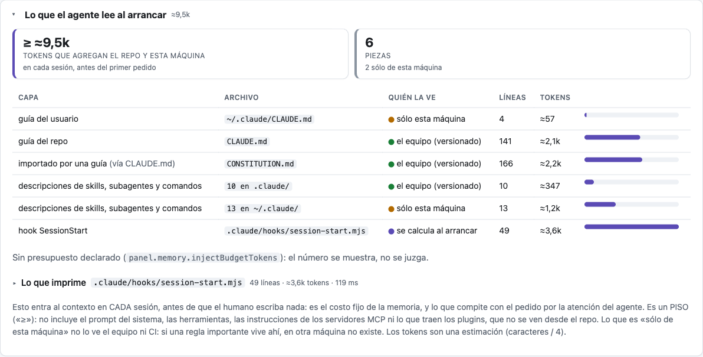

✓ ✗ –tres veredictos, no dos
La tesis
Un modelo no conoce tu repo. El arnés sí.
Un agente de código no sabe qué archivo es regenerable y cuál es la llave de producción, no recuerda qué rompió el build el mes pasado, y no tiene forma de comprobar si lo que escribió funciona. Lo que convierte un modelo en un colaborador útil sobre un repo concreto es la capa que lo envuelve: hooks que frenan donde el daño se hace, un gate que define qué significa «terminado», y evidencia de qué está verificado.
La consecuencia práctica es incómoda y es el eje de todo lo demás: test verde ≠ compila ≠ entregable. Y una señal omitida no es verde — la distinción que casi todos los pipelines borran, y por la que un gate puede reportar «listo» sin haber verificado nada.
Este repo no es una guía sobre eso. Es la infraestructura, y se audita a sí misma: su propio gate son las señales del arnés. Un repo de buenas prácticas que no las cumple no convence a nadie.
Y se mide: cada freno declara cuánto cuesta en milisegundos y el gate imprime el tiempo de cada señal. Un control que nadie puede medir es un control que alguien termina apagando — los números están acá.
0dependencias, y todo verificado por un comando
La evidencia
Cada número de esta página lo imprime un comando
No hay una sola cifra acá que no salga de correr algo. Son las señales del gate de este
repo, hoy, y cualquiera las reproduce con npm run gate.
npm run gate en Linux, Windows y macOS. La matriz cazó tres bugs que sólo existían en Windows.
node. Es lo que hace al arnés copiable en cualquier repo sin negociar con nadie.
4 comandosen el repo que ya tenés
Quick start
Cuatro comandos, en tu repo, sea del stack que sea
No hay app de juguete que crear ni carpetas que inventar: el arnés se instala en el repositorio en el que ya trabajás. El instalador detecta el stack por su manifiesto y aplica su perfil. Cero código nuevo: lo único específico de tu repo es un JSON.
# 1 · instalar (dry-run primero: nunca sobreescribe)
git clone https://github.com/raalzate/agent-harness /tmp/ah
node /tmp/ah/scripts/harness-init.mjs .
node /tmp/ah/scripts/harness-init.mjs . --apply
# 2 · el único archivo específico de tu repo
cp /tmp/ah/examples/<tu-stack>.json \
.claude/harness.config.json
# 3 · ¿los frenos muerden?
node scripts/harness-selftest.mjs
# SELF-TEST VERDE
# 4 · ¿qué significa «terminado»?
bash scripts/gate.sh
# GATE VERDE — entregable.
# (el paso que ninguna herramienta hace por vos:
# poner en gate.signals el comando que en TU
# stack no se puede omitir — dotnet test, mvn
# verify, pytest, go test ./…)*.csproj *.sln → dotnet
pom.xml → jvm-maven
build.gradle[.kts] → jvm-gradle
pyproject.toml → python
go.mod → go
Cargo.toml → rust
package.json → node
angular|vite|next… → front
Detecta varios (un monorepo con front y
back): los lista y NO elige por vos.
Configs de ejemplo publicadas, listas para
copiar en el paso 2:
examples/{dotnet, jvm-spring, android-kotlin,
swift-ios, python, go, rust,
ruby-rails, php-laravel, cpp-cmake,
elixir-phoenix, embedded-c, unity-game,
node-typescript, front-react,
data-airflow, monorepo, legacy-brownfield,
infra-terraform, quickstart}.jsonY ahora, verlos morder
Un freno que nunca se vio fallar es una esperanza. Cada uno de estos devuelve
exit=2 con el motivo escrito — que es lo único que el agente lee cuando lo
frenás. Las reglas de abajo son las de tu config: el arnés no trae ninguna puesta.
| Lo que intentás | Qué contesta el arnés |
|---|---|
| borrar en lote | exit=2 — antes de un borrado amplio: commit o backup, y la lista a la vista |
| editar una ruta protegida | exit=2 — secreto, lockfile o derivado: no lo edita el agente |
| un 2.º lector del mismo estado | exit=2 — ya existe el dueño de ese dato; la validación se desincroniza |
| IO en la capa pura | GATE ROJO — [PUREZA] con archivo, línea y regla |
──▶ convention lint
repo-lint: 1 problema(s)
<capa pura>/puntaje.*:1 [PUREZA]
la capa pura no importa el IO del stack
(node:fs · System.IO · java.io · os).
La capa pura decide, el resto orquesta: si
la lógica lee el disco, testearla exige un
archivo de verdad y deja de ser lógica.
✗ convention lint
GATE ROJO — señales fallidas:
convention lintLos comandos con su salida real
docs/quickstart.md — los siete pasos con la salida de cada comando, sobre una app de cuatro archivos en Node para que sea copiable sin instalar nada más. Para llevarlo a otro stack: portar.md y perfiles.md.
Esas salidas no están redactadas: una señal del gate extrae la app del propio markdown, la instala, copia el config y verifica las nueve cosas que promete. Si el arnés cambia y el quick start deja de funcionar, se pone rojo el gate — no el lector.
11leyes, cada una con su cicatriz
El método
Once leyes que salieron de aplicarlo, no de diseñarlo
Ninguna es una opinión de diseño: cada una tiene un incidente detrás y un comando que la hace cumplir. Las cuatro primeras son las que más seguido faltan.
- Una regla sin un comando que la haga fallar es una sugerencia. La mitad de la documentación de un repo típico no son reglas: son deseos.
- Toda señal declara qué error atrapa que ninguna otra atrapa. Sin ese motivo escrito, cuando el gate tarde se saca lo último que alguien agregó, no lo que menos vale.
- Omitido no es verde. La herramienta que no está instalada, el paso saltado: todos tienen la misma tentación y producen la misma mentira.
- Todo freno se prueba en dos direcciones: que muerda, y que no muerda de más. La segunda decide si el arnés sobrevive seis meses.
- La especificidad va en datos, no en código. Portar el arnés tiene que ser reescribir un archivo, no reescribir scripts.
- El freno se prueba con el eslabón real. Hook ejecutado de verdad, repo git de verdad — o es «instalado y muerto».
- Lo que se decide, se declara; lo que se declara, se verifica. Vale para la deuda, las exenciones y dónde viven los artefactos.
- El registro es un freno, no una convención. El agente es rápido: termina cuatro cambios antes de que nadie abra un ítem de trabajo.
- La memoria del agente es infraestructura. Un puntero roto gasta el turno; una lista incompleta lo hace trabajar con información falsa sin que nada falle.
- Una pregunta se contesta; una acción se pide. El agente que responde una consulta editando archivos cuesta trabajo de revisión y cuesta confianza.
- Cada incidente deja infraestructura. El problema no termina cuando el síntoma desaparece: termina cuando existe el comando que falla si alguien lo repite.
Las dos lecturas que importan
El método
— el ciclo completo, las once leyes con su mecanismo, y las tres preguntas con las que se
mide si se está aplicando.
El caso de estudio
— el mismo método sobre un producto real y público: 8 señales del gate, 14 reglas de lint,
17 incidentes registrados… y los cuatro huecos que ese repo declara que no cubre.
5piezas, cada una con su falla que evita
Qué se instala
Cinco piezas, cinco fallas concretas
Ninguna es teórica: cada una existe porque su falla ya pasó, en este repo o en el equipo de alguien.
gate.sh · declarativo
Un gate único
La única definición de «entregable», declarada en JSON y corrida por tres actores con el
mismo comando: el humano, el agente y CI. Cada señal declara why — qué error
atrapa que ninguna otra atrapa.
Evita: «en mi máquina funciona», y que CI verifique algo distinto de lo que verifica quien programa.
10 hooks del agente · 4 de git
Frenos en el ciclo
Antes de escribir (¿te lo pidieron?, rutas protegidas, reuso), antes de un comando irreversible, después de cada edición (el lint del archivo tocado, con el error real) y al cerrar la tarea. En git: rutas protegidas al commitear y el registro del trabajo.
Evita: el agente que borra lo que no debía, el que dice «listo» sin verificar, y el cambio que llega al historial sin que nadie sepa por qué se hizo.
harness-selftest.mjs
Prueba de vida
Por cada regla del config deriva una muestra concreta, ejecuta el freno real y exige el bloqueo. Y prueba lo inverso: que no bloquee lo inocente. Los casos se generan solos.
Evita: «instalado y muerto» — archivos presentes cuyo eslabón activador nunca corre.
CONSTITUTION.md · STATUS.md
Principios y evidencia
Cada principio declara su fuerza: BLOCKING nombra el comando que falla;
REVIEW lo juzga una persona. En STATUS.md va sólo lo
verificado por un comando; lo que se supone va en «deuda conocida».
Evita: la prosa aspiracional que nadie hace cumplir, y releer el repo entero para saber si algo anda.
/lesson <incidente>
El ciclo del incidente
Un problema que costó tiempo termina en el mecanismo más fuerte disponible —test > hook/lint > comando > markdown— y esa mejora pasa el gate antes de quedar. Si el incidente ya estaba registrado, el hallazgo es otro: la regla existía y no frenó nada, así que hace falta un mecanismo más fuerte, no otra entrada de markdown.
Evita: tropezar dos veces con la misma piedra, y la «auto-mejora» del agente reescribiendo sus propias reglas sin control.
JSON→ bloqueo, con el porqué
Anatomía de un freno
Editás JSON. El agente lee el motivo.
Toda la especificidad del repo vive en un archivo. Los hooks y los scripts son genéricos:
leen de ahí. Y el campo reason no es documentación — es lo único que el agente
ve cuando lo bloqueás, así que es la única oportunidad de que entienda en vez de
reintentar.
{ "pattern": "git\\s+reset\\s+--hard",
"reason": "destruye trabajo sin
commitear. Usá `git stash` o pedí
confirmación al humano." }COMANDO BLOQUEADO:
`git reset --hard HEAD~2`
Motivo: destruye trabajo sin commitear.
Usá `git stash` o pedí confirmación
al humano.
Reformulá el comando o pedí confirmación
explícita. No lo reintentes igual.Ocho clases de regla cubren casi todo
Escribir una regla nueva es una línea de JSON, y el self-test la cubre sin código nuevo.
| Clase | Lo que observa | Ejemplo real |
|---|---|---|
| purity | una capa importa lo que no le corresponde | el dominio no importa el framework ni la red |
| patterns | texto prohibido en un ámbito | un secreto leído desde código de cliente |
| singleSource | un literal se cablea fuera de su registro | códigos de error duplicados a mano |
| invariants | un archivo perdió una línea que lo hacía andar | el apagado ordenado del servidor |
| forbiddenDeps | una dependencia vetada entró al manifiesto | un paquete sin mantenimiento |
| tests | un .only( olvidado | apaga la suite y el gate sale verde igual |
| incidents | un incidente registrado sin su mecanismo | todo gotcha declara Mecanismo: |
276 mslo que el arnés agrega a un turno
El costo, medido
Un arnés que nadie puede medir es un arnés que alguien apaga
Todo freno se paga en latencia, y se paga en el peor momento: en cada
prompt y en cada edición. Esa es la razón real por la que los equipos
desactivan sus propios controles — no porque estén en desacuerdo, sino porque estorban y
nadie sabe cuánto cuestan. Acá el número está impreso: npm run timing.
La regla que prohíbe que un hook lance procesos existía desde el primer día y se defendía con una intuición («eso va a ser lento»). Una intuición se discute con otra intuición. Un número se discute con datos, y convierte la excepción en algo con precio escrito: los dos hooks que tienen permiso de lanzar procesos son exactamente los dos que necesitan el doble de presupuesto.
{ "observability": {
"budgetMs": 400,
"runs": 3,
"budgets": {
"…/post-edit-check.mjs": 900,
"…/session-start.mjs": 900
} } }✓ PreToolUse bash-guard.mjs 69 ms
✓ PreToolUse protected-paths.mjs 68 ms
✓ PostToolUse post-edit-check.mjs 144 ms
Costo por evento:
UserPromptSubmit 207 ms
PreToolUse 276 ms
LATENCIA VERDE — todos dentro de
presupuesto.Qué mide, contra qué, y qué pasa si se degrada
Los diez hooks declarados se corren de verdad con un payload sintético, tres veces, y se reporta la mediana —la media la arruina un arranque frío, el máximo cualquier hipo del sistema operativo—. Es una señal del gate más: si un hook se pasa de presupuesto, no hay entregable.
| Lo que se mide | Medido | Por qué importa |
|---|---|---|
| un hook puro (no lanza procesos) | ~70 ms | es el piso: arrancar node. Ningún freno propio cuesta más que eso |
| los 2 hooks con permiso de lanzar procesos | 118 y 144 ms | el precio de la excepción, escrito en el config y no en la cabeza de alguien |
| costo por turno del agente | 276 ms | lo que el arnés le agrega a una edición, sumando los cuatro frenos que corren antes de escribir |
| cada señal del gate | línea Tiempo: | sin el número, «el gate tarda» termina sacando la señal que molesta en vez de la que cuesta |
Los presupuestos van holgados a propósito: lo que caza esta señal no son milisegundos, es el orden de magnitud —el día que alguien meta un typecheck completo dentro de un hook—. Un rojo falso en un runner cargado enseña a ignorar la señal entera, que es peor que no tenerla. Y la medición corre los hooks de verdad, así que restaura los marcadores de sesión que algunos escriben: medir no puede cambiar el estado que mide.
Como todo freno de este repo, llega con su prueba de vida: con presupuesto imposible la señal se pone roja, con presupuesto holgado el repo pasa, sin la clave declarada deja pasar —un repo portado no se pone rojo por una señal que su equipo no eligió—, y un caso verifica que medir no deje basura atrás.
0,5 slo que tarda en regenerarse, en cada gate
El panel
«STATUS dice verde» y «el gate salió verde acá, hace diez minutos» son datos distintos
Para saber si el arnés estaba vivo había que correr cinco comandos y juntar las salidas a mano. El panel es una página HTML autocontenida que lo contesta de un vistazo, y se regenera en cada corrida del gate, verde o roja: nunca es más viejo que el último gate. Sin dependencias, sin red, sin ningún modelo de lenguaje: se deriva de los archivos que el arnés ya exige y del registro que el gate escribe por señal.
La prosa y la máquina van separadas a propósito. En la captura, el veredicto escrito en STATUS dice verde del 21 de septiembre, y el último gate en esta máquina salió rojo hoy —un test con presupuesto de reloj que falla bajo carga—. Sin el panel, esa diferencia se descubre cuando alguien lee el STATUS en voz alta.



La salud no inventa criterios. Cada alarma es la versión visible de algo
que un comando ya pone en rojo, y lo nombra: un freno copiado sin la clave que lo enciende
(«instalado y muerto»), un hook declarado que no existe, una señal sin why, un
control fuera del gate sin pipeline que lo corra, un mecanismo que apunta a la nada.
El burn-down depende de dónde viva el plan, y lo decide el config: en el repo, las casillas de los archivos del plan recorridas por la historia de git; en el gestor, las fechas de alta y cierre de cada ítem, por un comando que escribe cada repo —ningún script del arnés conoce una forja—. La serie usa las fechas de los datos, nunca la de hoy: con los mismos datos, el mismo gráfico. Sin plan sale omitido, nunca «0 %».
La memoria, como llega al agente. Las fuentes que el arnés exige no son la memoria: la memoria es lo que el agente lee sin que nadie se lo pida. La pestaña Memoria la ordena por cómo llega —lo que entra en cada sesión y cuánto pesa, lo que entra sólo cuando algo lo dispara y cuánto se usó, lo que recuerda esta máquina y si todavía apunta a algo que existe—, y separa lo que ve el equipo de lo que sólo existe en una máquina. En el primer repo donde se midió, 11 de 15 notas de la memoria automática citaban rutas que ya no resuelven.
El panel se mira, no decide. El gate lo corre como proceso hijo con
tiempo límite e ignora su resultado: la primera versión corría adentro del gate, y el
revisor demostró que un process.exit(0) en el panel volvía verde a un gate
rojo. Hoy ese sabotaje es un caso del self-test. Y para medir lo que inyecta un hook, el
panel sólo lo ejecuta si el config lo permite. Todo en
panel.md.

1consulta en vez de veinte lecturas
El índice del código
Leer el repo a mano es el error más caro, y no aparece en ningún log
Un agente sin índice contesta «¿dónde está X?» recorriendo el árbol: ls,
grep, abrir, descartar, abrir más. No falla: gasta. Y de paso
se pierde lo que el texto no muestra — quién llama a quién, qué implementa qué interfaz,
qué se rompe si toco esto.
Por eso el índice dejó de ser una recomendación. La herramienta por default es codegraph: un grafo local en SQLite, sin API keys, que se sincroniza solo al guardar. La regla es una sola: primero el índice, después abrir archivos — y sólo el fragmento que el índice señaló.
curl -fsSL https://raw.githubusercontent.com/colbymchenry/codegraph/main/install.sh | sh
codegraph install # conecta los agentes
codegraph init # construye el índice
codegraph explore "cómo llega el pago a la cola"──▶ code index (codegraph)
– OMITIDA: no existe `.codegraph`
Señales omitidas (NO son verde):
code index (codegraph)Por qué se omite en vez de fallar
Un gate que se pone rojo porque falta una herramienta local castiga a quien clona el repo por primera vez — y ese castigo se paga borrando la señal. «Omitido no es verde», impreso en cada corrida, consigue lo mismo sin darle a nadie un motivo para desactivarla.
| Mecanismo | Fuerza | Qué hace |
|---|---|---|
| señal del gate | alta | corre codegraph status; OMITIDA si no hay índice, y la omisión se imprime siempre |
| hook graph-first | media | ante «dónde / quién usa / qué rompe / acoplamiento», pone la regla delante del agente antes de que abra nada |
| protectedPaths | alta | el índice es derivado: se reconstruye, no se edita |
| subagente explorer | media | su paso 1 es el índice; grep queda para lo que el grafo no ve |
Lo que ningún comando verifica: que el agente
haya consultado el índice antes de leer. Eso es juicio del reviewer, y
está declarado como tal — un cambio que abrió quince archivos para tocar dos es un
hallazgo.
#123o no-issue:, pero algo
Trazabilidad
Un cambio que nadie registró existe sólo en el diff
Con un agente el problema se agrava por una razón concreta: es rápido. Cuatro arreglos pueden estar terminados en una sesión sin que ninguno haya pasado por un ítem de trabajo, y el registro se hace de memoria al final — o no se hace.
Por eso el registro no es una convención escrita: es un hook. Si el commit toca código, el mensaje referencia el ítem o declara por qué no lo lleva, en su propia línea y con motivo. Saltarse el registro queda firmado en el historial.
{ "kind": "azure-devops",
"issuePattern": "\\bAB#[0-9]+\\b",
"issueExample": "AB#123" }commit-msg: este commit toca código
y no queda registrado en ninguna parte.
Elegí una de las dos, y que quede
en el historial:
1) Referenciá el ítem: AB#123
2) no-issue: <por qué no hace falta>Ningún script conoce tu forja
Lo único que cambia entre un equipo y otro es qué cuenta como referencia. El mecanismo es el mismo, y las configs de ejemplo usan seis gestores distintos a propósito — GitHub, GitLab, Azure Boards, Jira, Linear y Gitea.
| Gestor | En el commit | issuePattern |
|---|---|---|
| GitHub | #123 · Closes #123 | (^|[^A-Za-z0-9_])#[0-9]+ |
| GitLab | #123 | igual que GitHub |
| Azure Boards | AB#123 | \bAB#[0-9]+\b |
| Jira | PROJ-123 | \b(PROJ|OPS)-[0-9]+\b |
| Gitea · Linear | #123 · ENG-123 | el prefijo real, anclado |
La trampa
\b[A-Z]{2,}-[0-9]+\b parece razonable para Jira y
caza UTF-8, SHA-256 e ISO-8601: cualquier commit que
mencione un estándar pasaría el freno sin registrar nada. Anclá los prefijos
reales. El self-test no puede avisarte: deriva la muestra del propio patrón, así
que un patrón que caza de más también caza su muestra.
rama+ commit, con mecanismo
Ciclo de desarrollo
El modelo de ramas es la convención menos escrita de un repo
Se explica una vez cuando alguien entra, se ve a medias en git log, y nadie
se entera cuando deja de cumplirse. Con un agente es peor: commitea en la rama
donde cayó, le pone el nombre que se le ocurre y mete todo junto, porque nadie se
lo dijo — y decírselo en un prompt no es un mecanismo.
El arnés no tiene opinión sobre qué modelo usar. Tiene dos claves de config, un comando que falla, y una regla: lo que no se puede verificar se declara como declaración, no como freno.
{ "model": "trunk-based",
"branchPattern": "^(feat|fix|chore)/[a-z0-9._-]+$",
"baseBranch": "main",
"maxAgeDays": 5, "staleAction": "warn" }ciclo: el nombre de la rama `arreglos`
no sigue el modelo declarado (trunk-based).
Patrón: ^(feat|fix|chore)/[a-z0-9._-]+$
ej. fix/multiplataforma
git branch -m <nombre-que-sigue-el-patrón>Trunk-based, GitHub flow o git flow: el mismo mecanismo
Lo único que cambia entre un equipo y otro es el contenido de workflow. El
nombre de la rama y su edad —medida desde donde se separó de la base— las verifica
pre-push antes de tocar la red. A dónde vuelve cada familia de ramas
(mergeInto) se declara y no se finge verificado: lo decide el
pull request, que el hook no ve.
| Modelo | ramas largas | rama de trabajo | edad máxima |
|---|---|---|---|
| Trunk-based | main | feat/… fix/… | 2 días, block |
| GitHub flow | main | feat/… fix/… | 5 días, warn |
| GitLab flow | main · staging · production | feat/… fix/… | 5 días, warn |
| Git flow | main · develop | feature/… hotfix/… release/… | 10 días, warn |
Las cuatro prácticas de XP que se pueden verificar
XP trae doce. Cuatro caben en un hook de commit-msg; el resto es juicio, y
decirlo es parte de que se crea la tabla. Cada una se enciende sola, y cada una tiene
fuga declarada con motivo: la fuga es la diferencia entre un freno que se
respeta y uno que alguien apaga en una semana.
| clave | Qué verifica | Qué NO | fuga |
|---|---|---|---|
| testFirst | el commit que cambia comportamiento trae también un archivo de prueba | que la prueba se escribiera antes | no-test: |
| smallBatch | archivos y líneas bajo el límite de ese equipo | que el lote tenga sentido propio | big-batch: |
| refactorSeparate | un commit refactor: no cambia pruebas | que el refactor sea un refactor | mixed-refactor: |
| pairing | el commit deja rastro de con quién se hizo | que la sesión de a dos existiera | solo: |
La trampa
Encender las cuatro de una. Una práctica instalada sin cicatriz
detrás se desactiva en una semana y se lleva puestas a las que servían. En
este repo pairing viene apagado a propósito —con un agente y una persona, la
fuga sería la regla— y su mecanismo se prueba igual con un cebo del self-test: el freno
existe y muerde el día que alguien lo encienda.
0→5una tarde, en este orden
Instalarlo en tu repo
Copiar archivos son cinco minutos. El resto es la parte que sirve.
El instalador copia lo genérico y no sobreescribe nada. Lo que ninguna herramienta puede hacer por vos —decidir cuáles son las señales reales de tu repo y traducir sus convenciones a reglas— es exactamente donde está el valor. El orden importa: cada paso hace verificable al siguiente.
Instalar los archivos
node scripts/harness-init.mjs <repo>en dry-run, después--apply. Detecta tu stack por el manifiesto y aplica su perfil: qué extensión es código, cómo se escribe un import, dónde viven las dependencias, qué directorios son derivados. Ygit config core.hooksPath .githooks: un hook en.git/hooks/existe, se ve bien y nunca corre.Definir el gate
Para cada señal candidata, una pregunta: ¿qué clase de error atrapa que ninguna otra atrapa? Esa respuesta va en
why. Después rompé algo a propósito y confirmá que el gate se pone rojo — un gate que nunca falló no es un gate, es una esperanza.Rutas y comandos
Qué nunca edita el agente (secretos, lockfiles, derivados, generados, config de producción) y qué comandos no tienen ctrl-Z en tu stack. Media hora, y es el mejor retorno de todo el arnés.
Las reglas de tu arquitectura
¿Qué capa tiene que quedar limpia? ¿Qué registro es fuente única de verdad? ¿Qué archivo tiene invariantes que nadie debe romper? ¿Qué texto no debería existir nunca en cierto ámbito?
Memoria y evidencia
Cuatro archivos con un trabajo cada uno. En la constitución, la disciplina que sostiene todo: un principio BLOCKING nombra su comando; si no podés nombrarlo, es REVIEW.
Cerrar el bucle
CI corre el mismo gate. El hook
Stopactivo./harness-audituna vez para la línea base, y/lessoncada vez que algo cueste tiempo.
Instalarlo en tu repo
Si todavía no lo viste funcionar, el quick start son 10 minutos y ahorra esta tarde entera.
git clone https://github.com/raalzate/agent-harness
node scripts/harness-init.mjs /ruta/a/tu/repo # dry-run
node scripts/harness-init.mjs /ruta/a/tu/repo --applyEl self-test va a estar rojo recién instalado, y está bien: el config de arranque trae placeholders a propósito. Ese rojo es el mapa de lo que falta — cada línea nombra la clave que todavía apunta a la nada.
8stacks, cero reglas ajenas
Tu repo no es de Node
Agnóstico no es vacío
Hay cosas de un stack que ningún equipo decide: qué extensión es código, cómo se escribe un import, dónde viven las dependencias, qué directorios son derivados. Hacer que cada repo las descubra a mano es la forma más rápida de que el portado se abandone a mitad de camino.
El instalador detecta el stack por su manifiesto y aplica su perfil. Si detecta varios —un monorepo con front y back— no elige por vos: los lista y te dice cómo pedirlos.
Perfil de stack (detectado): dotnet
→ .claude/hooks/… 11 hooks
→ scripts/… gate, lint, self-test, banco
→ .claude/harness.config.json plantilla + perfil dotnet
DRY-RUN: 38 archivo(s) a copiar, 0 conservado(s).{ "codeExtensions": [".cs", ".fs", ".vb"],
"purityImportSyntax": ["^\\s*using\\s+{mod}\\b"],
"forbiddenDeps": {
"matcher": "PackageReference…Include=\"{pkg}\"" },
"gate": { "signals": [] } ← vacío a propósitoLo que viaja son los principios, no las reglas ajenas
Una regla concreta describe los incidentes de un repo; instalada en otro es ruido bien intencionado que gasta contexto del agente y paciencia del equipo, y termina desactivada llevándose puestas a las que sí servían. El corte no es una convención escrita: es una regla del lint que pone el gate en rojo.
| Sí viaja — hecho del lenguaje | No viaja — cicatriz de un equipo |
|---|---|
| gate.codeExtensions | gate.signals |
| purityImportSyntax | patterns · reuse · singleSource |
| forbiddenDeps.matcher | forbiddenDeps.packages |
| derivados: bin/ obj/ target/ | bash.deny propio del stack |
| tests.filePattern | commitMsg.codePattern |
El gate se prueba en repos reales
Un perfil que sólo se verifica a sí mismo no prueba nada: el
self-test mira la forma, no el encaje. Por eso una señal
del gate instala el arnés en un repo de juguete de cada stack —con un .csproj
de verdad, un pom.xml de verdad— y verifica que los frenos muerdan ahí:
105 comprobaciones sobre 9 repos de juguete. En su primera corrida encontró dos bugs
que ninguna otra señal veía, uno de ellos un falso rojo que sólo aparecía fuera de
JS.
24configs completas, no plantillas vacías
Configs de ejemplo
La señal que en tu stack no se puede omitir
Cada ejemplo es el resultado de hacer las preguntas del paso 2 en ese stack. Copiá el que más se parezca al tuyo y borrá lo que no aplique: una regla que no corresponde a tu repo es peor que ninguna — entrena al equipo a ignorar los frenos.
| Stack | Lo que casi todos olvidan |
|---|---|
| TypeScript | El runner de tests transpila por archivo y no verifica tipos: un import inválido pasa la suite y rompe el build. tsc --noEmit es irremplazable. |
| Python | ruff y mypy son señales distintas. Y el chequeo de migraciones pendientes atrapa el fallo que ningún test ve: un modelo cambiado sin su migración. |
| C# / .NET | Las dependencias no viven en un manifiesto clave-valor sino en <PackageReference>: una regla escrita para package.json sale verde con la dependencia prohibida presente. Y sin -warnaserror los warnings se acumulan hasta que nadie los lee. |
| Java / Kotlin | mvn verify es una señal compuesta: conviene tener también las baratas por separado. Y el error que más cuesta después es la inyección por campo (@Autowired en un atributo), que hace intesteable la clase sin levantar el framework. |
| Go | Sin -race las condiciones de carrera aparecen en producción; sin -count=1 la caché de tests reporta un verde viejo. |
| Monorepo | La rotura cara es entre paquetes: sólo el build de proyectos la ve. Un gate por paquete la deja pasar. |
| Terraform | Acá el arnés se invierte: el freno más valioso no es el lint, es bash.deny. El agente puede planear todo y aplicar nada. |
3cosas, en cualquier forja
CI/CD
El archivo de pipeline no protege nada por sí solo
En las cinco forjas hacen falta tres cosas, y sólo una vive en el repo:
el pipeline corre el gate, la política de rama lo vuelve
obligatorio, y tracker.issuePattern hace que el trabajo
quede registrado. Falta una y el sistema tiene un agujero con esa
forma.
Lo que no cambia nunca es el comando: CI corre el mismo
gate.command que el humano. Y eso deja de ser prosa, porque un
invariants sobre el archivo de pipeline lo verifica — tiene que contener el
comando del gate, y no puede contener la marca de «tolera fallos» de esa forja.
| Forja | archivo | cómo se vuelve obligatorio | marca prohibida |
|---|---|---|---|
| GitHub Actions | .github/workflows/ci.yml | branch protection → required status check | continue-on-error: true |
| GitLab CI | .gitlab-ci.yml | protected branch + «Pipelines must succeed» | allow_failure: true |
| Azure DevOps | azure-pipelines.yml | branch policy → build validation (Required) | continueOnError: true |
| Bitbucket | bitbucket-pipelines.yml | branch restriction + merge check | el paso que traga el rojo |
| Jenkins | Jenkinsfile | el plugin que reporta el estado a la forja | catchError |
steps:
- task: NodeTool@0
inputs: { versionSpec: '20.x' }
- script: bash scripts/gate.sh
displayName: gate{ "file": "azure-pipelines.yml",
"required": ["bash scripts/gate.sh"],
"forbidden": ["continueOnError: true"] }Lo que el gate NO puede verificar
La protección del lado del servidor: necesitaría red. El hook
pre-push falla antes de la red y con el motivo, pero es el complemento local
— la política de rama la prende una persona, una vez, en la forja. Está declarado así en
el estado del arnés, no asumido.
Las plantillas de pipeline —GitLab, Azure, Bitbucket y Jenkins— están listas para copiar en plantillas/ci/, y el criterio completo en cicd.md.
1gate por entregable, no por repo
Varios proyectos
¿Un arnés para todo, o uno por proyecto?
La pregunta se contesta con otra: ¿qué significa «entregable» acá, una cosa o varias? Si un cambio se mergea cuando todo está verde, hay un gate. Si cada pieza se mergea y se despliega por su cuenta, hay un gate por pieza. El gate no es un archivo: es la definición de terminado, y no puede haber dos.
| Forma | Gate | Lo que más rinde | El riesgo propio |
|---|---|---|---|
| Monorepo | uno, workspace completo | una purity por paquete: quién puede importar a quién | los path filters decidiendo qué se verifica: ahí el filtro pasó a ser la definición de entregable |
| Varios repos | uno por repo | el mismo workflow con el mismo nombre de check en todos | quedar desparejo, y descubrirlo en el peor momento |
| Plataforma | uno por repo | los perfiles de stack: hechos del lenguaje, no reglas | el config «corporativo» de cuarenta reglas |
El error clásico de plataforma
Un equipo escribe un config corporativo con cuarenta reglas y lo empuja a los ocho repos. A la semana, tres equipos comentaron los hooks. Lo que se empuja son los principios y el mecanismo; las reglas las gana cada repo con sus incidentes — una regla sin cicatriz detrás es ruido bien intencionado.
Las tres formas, con cómo se ve cada una en el pipeline, cómo se actualiza el arnés en N repos y qué pasa con el índice cuando hay varios proyectos: multi-proyecto.md.
25documentos, en cuatro capas
Documentación
Todo lo que esta página resume, en largo
Esta página es la versión de una pasada. Lo que sigue es la documentación completa, en el orden que funciona: el método (qué se hace y por qué) → el caso (cómo se ve aplicado) → la receta (cómo instalarlo) → la referencia (qué significa cada clave).
| Documento | Qué contesta |
|---|---|
| Por qué — la teoría | |
| metodo.md | El ciclo de trabajo y las once leyes, cada una con su cicatriz, cómo se ve cuando falta y el comando que la hace cumplir. |
| caso-de-estudio.md | Un arnés real con números verificables, cuatro mecanismos contados desde el incidente que los creó, y los huecos que ese repo declara. |
| buenas-practicas.md | La guía de fondo, agnóstica de stack: qué es un arnés, las cinco decisiones del bucle, los niveles de madurez L0–L4. |
| guias-y-sensores.md | El marco de harness engineering (Böckeler, martinfowler.com) aplicado: guías y sensores, computacional e inferencial, qué mecanismo cubre cada idea y qué huecos quedan declarados. |
| agilidad.md | Los principios ágiles con mecanismo: diez principios, el comando que falla cuando se violan, y la lista explícita de lo que NO se hace cumplir. |
| ciclo-desarrollo.md | El ciclo de desarrollo declarado: modelo de ramas (trunk-based, git flow, GitHub flow) y las cuatro prácticas de XP que tienen mecanismo, con lo que cada una NO prueba. |
| arquitectura.md | Qué documentación de arquitectura es obligatoria, cuándo va un ADR, y la traducción de bajo acoplamiento / alta cohesión a reglas que fallan. |
| Cómo — la práctica | |
| quickstart.md | Empezá acá. De cero a gate verde en 10 minutos con un to-do de cuatro archivos: tres frenos mordiendo con salida real, y el gate rojo a propósito. |
| portar.md | La receta: instalarlo en un repo cualquiera en una tarde, con las preguntas a contestar y en qué orden. |
| perfiles.md | Perfiles de stack del instalador (.NET, JVM, Python, Go, Rust, front): qué hecho del lenguaje viaja, qué regla no viaja nunca y el freno que lo mantiene así. |
| trazabilidad.md | Que el trabajo quede registrado y cómo entra a la rama principal, en cualquier forja. |
| codegraph.md | El índice del código es obligatorio. codegraph: qué cuesta leer el repo a mano, cómo se instala, cómo se consulta y qué señal del gate lo exige. |
| cicd.md | El pipeline: el mismo gate en tres lugares (humano, agente, CI), las cuatro reglas del pipeline y qué hacer cuando el gate tarda. |
| multi-proyecto.md | Monorepo, varios repos o una plataforma entera: dónde va el gate, qué viaja entre repos, cómo se actualiza el arnés en N proyectos. |
| multiplataforma.md | Windows, macOS y Linux: qué corre con qué intérprete, las trampas donde el freno no falla sino que desaparece, y la matriz de CI que lo demuestra. |
| config-reference.md | Cada clave del config: qué hace, qué la lee, qué se rompe si la tocás. |
| panel.md | El panel del arnés, regenerado en cada gate: la salud del arnés, la memoria del repo y lo que corrió de verdad en esta máquina, configurable para cualquier stack. |
| recetas.md | Situaciones concretas con el comando al lado: agregar una señal, medir si el arnés está vivo, el gate que tarda, «no usamos GitHub». |
| Este repo — el ejemplo trabajando | |
| arnes.md | Cómo está montado el arnés de este repo, señal por señal y hook por hook. |
| sdd.md | Cuándo el trabajo arranca con spec y cuándo no, y por qué saltarse la ruta se declara. |
| gotchas.md | Los incidentes que costaron horas, en formato fijo: síntoma · causa · regla · mecanismo. |
| README.md | El índice de la documentación, con las cuatro capas y por dónde empezar. |
| Decisiones — por qué está hecho así | |
| 0001 | La especificidad va en un JSON y el gate es declarativo. |
| 0002 | Sólo node y bash — y qué precisión se resigna a cambio. |
| 0003 | El self-test deriva sus casos del config en vez de tener uno escrito por freno. |
| 0004 | El contrato de exit codes, y por qué un arnés roto deja pasar. |
| 0005 | El índice del código pasa de recomendación a requisito — y por qué su señal se omite en vez de fallar. |
| 0006 | El banco corre un proceso hijo por caso y el contrato entre padre e hijo es la salida — el gate de 129s a ~82s. |
| 0007 | Los controles caros o que dependen del reloj van fuera del gate, con el pipeline que los corre declarado y verificado por el self-test. |
| 0009 | El gate regenera el panel del arnés en cada corrida, como proceso hijo cuyo exit code se ignora: el panel se mira, no decide. |
| 0010 | El panel muestra la memoria como llega al agente —fija, selectiva, personal, versionada— y sólo ejecuta un hook si el config lo permite. |
Un documento nuevo que no aparezca en esta tabla pone el gate en rojo: el índice no se mantiene a mano.
–lo que no es
Límites declarados
Cinco cosas que este arnés no hace
- No es un sandbox. La lista de comandos denegados sube el costo del error accidental; un agente puede reformular un comando. Para aislamiento real hacen falta contenedores o permisos del sistema operativo.
- No es un linter de estilo. Convive con ESLint, ruff o golangci-lint y cubre lo que ellos no: arquitectura y dominio. El lint propio es regex sobre texto, sin AST — cuando la precisión importe, la señal correcta es el linter de tu stack.
- No se libra de
node. Los hooks y los scripts corren connodeybash, también en un repo de .NET, JVM, Python o Go: eso significa node en la máquina del equipo y en el runner de CI. Es el precio de que el arnés entero sea un puñado de archivos copiables; la alternativa —reescribir once hooks en cada lenguaje— es justamente lo que lo volvería inportable. - No mide el costo en tokens. La latencia de cada hook sí está medida y tiene presupuesto; el texto que un hook inyecta al contexto del agente también se paga, y eso todavía no tiene comando. Está escrito como deuda conocida, no como señal verde.
- No reemplaza el criterio. La intención no es verificable por máquina: por eso hay principios REVIEW y un subagente que revisa el diff. Lo que el arnés logra es que lo verificable no dependa de que alguien se acuerde.
Los cinco están escritos en el repo, con su mecanismo candidato, junto al resto de la deuda conocida.